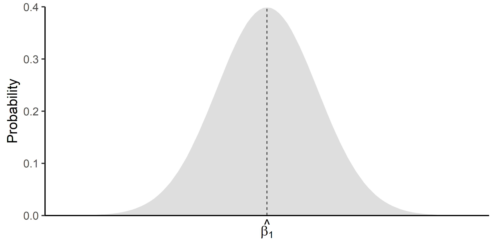
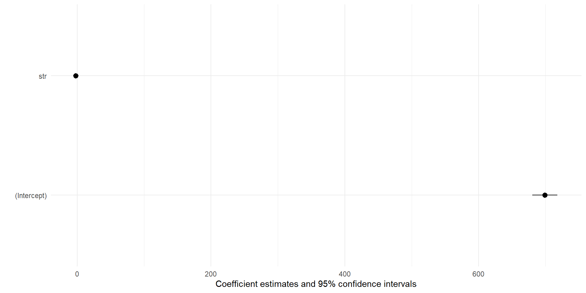
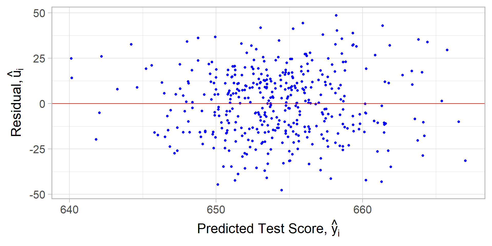
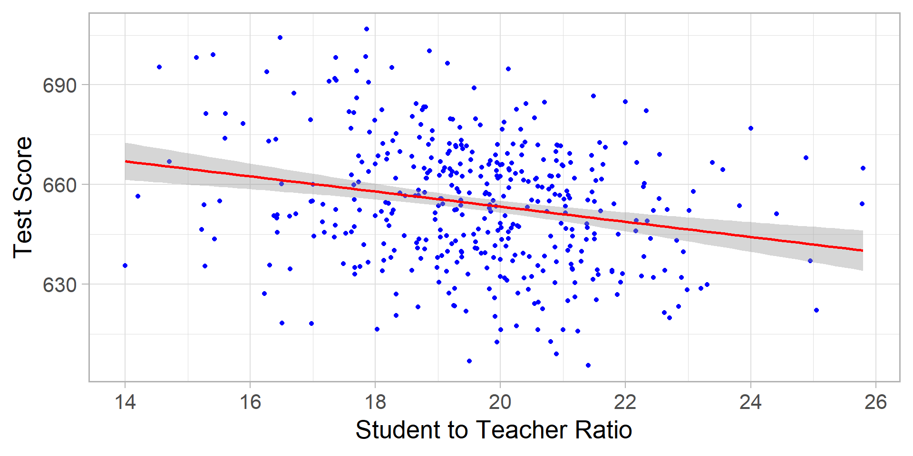
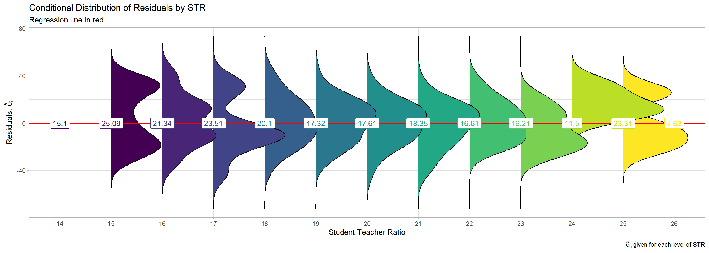
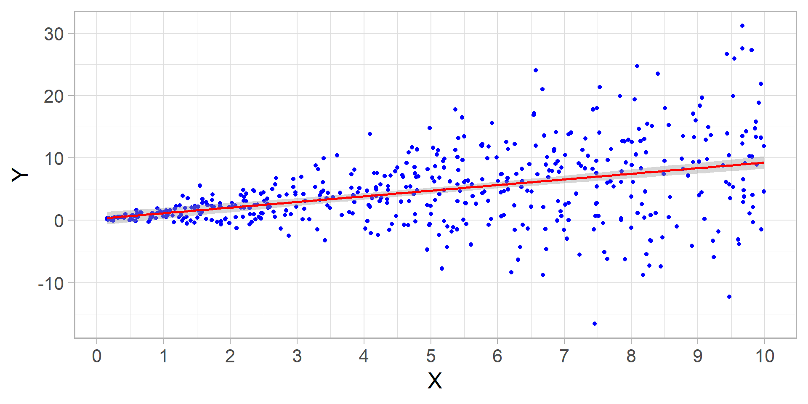
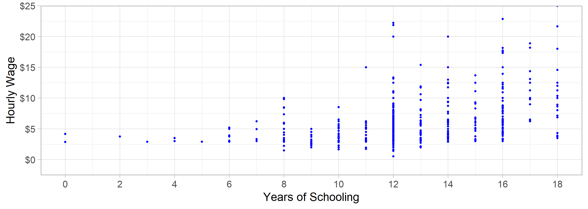
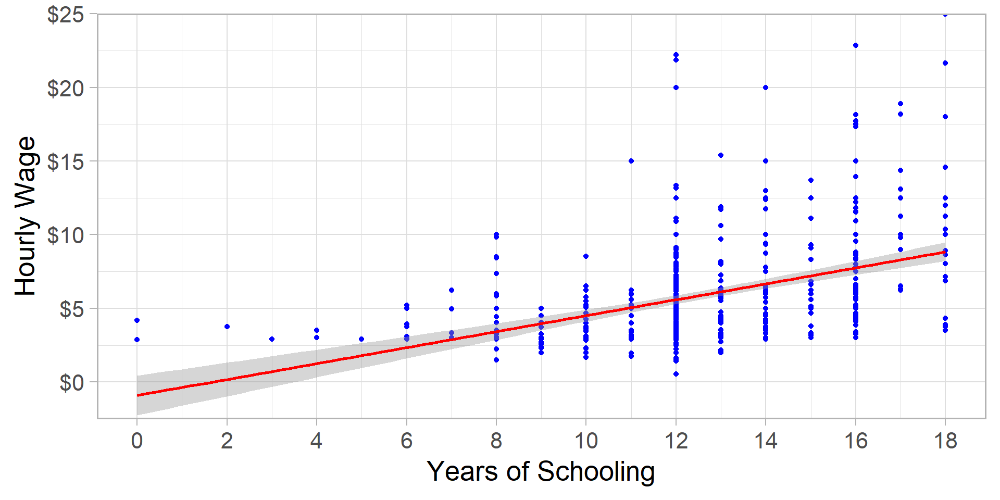
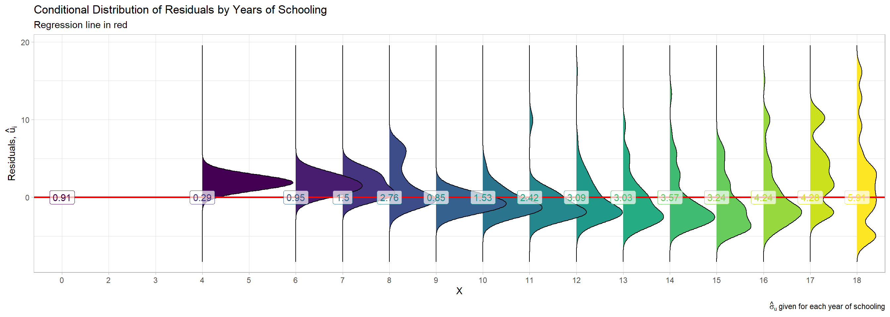

2.5 — Precision and Diagnostics
ECON 480 • Econometrics • Fall 2022
Dr. Ryan Safner
Associate Professor of Economics
safner@hood.edu
ryansafner/metricsF22
metricsF22.classes.ryansafner.com
Contents
The Sampling Distribution of \(\hat{\beta_1}\)
\[\hat{\beta_1} \sim N(\mathbb{E}[\hat{\beta_1}], \sigma_{\hat{\beta_1}})\]

The Sampling Distribution of \(\hat{\beta_1}\)
\[\hat{\beta_1} \sim N(\mathbb{E}[\hat{\beta_1}], \sigma_{\hat{\beta_1}})\]
- Center1 of the distribution: \(\mathbb{E}[\hat{\beta_1}]\) (last class)
The Sampling Distribution of \(\hat{\beta_1}\)
\[\hat{\beta_1} \sim N(\mathbb{E}[\hat{\beta_1}], \sigma_{\hat{\beta_1}})\]
Center1 of the distribution: \(\mathbb{E}[\hat{\beta_1}]\) (last class)
Precision or uncertainty of the estimate (today)
- Variance \(\sigma^2_{\hat{\beta}_1}\)
- Standard error2 \(\sigma_{\hat{\beta}_1} = \sqrt{var(\hat{\beta}_1)}\)
The Sampling Distribution of \(\hat{\beta_1}\)
\[\hat{\beta_1} \sim N(\mathbb{E}[\hat{\beta_1}], \sigma_{\hat{\beta_1}})\]
Center1 of the distribution: \(\mathbb{E}[\hat{\beta_1}]\) (last class)
Precision or uncertainty of the estimate (today)
- Variance \(\sigma^2_{\hat{\beta}_1}\)
- Standard error2 \(\sigma_{\hat{\beta}_1} = \sqrt{var(\hat{\beta}_1)}\)

Variation in \(\hat{\beta}_1\)
What Affects Variation in \(\hat{\beta_1}\)
\[var(\hat{\beta_1})=\frac{(SER)^2}{n \times var(X)}\]
\[se(\hat{\beta_1})=\sqrt{var(\hat{\beta_1})} = \frac{SER}{\sqrt{n} \times sd(X)}\]
- Variation in \(\hat{\beta_1}\) is affected by 3 things:
- Goodness of fit of the model (SER)1
- Larger \(SER\) \(\rightarrow\) larger \(var(\hat{\beta_1})\)
- Sample size, n
- Larger \(n\) \(\rightarrow\) smaller \(var(\hat{\beta_1})\)
- Variance of X
- Larger \(var(X)\) \(\rightarrow\) smaller \(var(\hat{\beta_1})\)
Variation in \(\hat{\beta_1}\): Goodness of Fit
Variation in \(\hat{\beta_1}\): Sample Size
Variation in \(\hat{\beta_1}\): Variation in \(X\)
Presenting Regression Results
Our Class Size Regression
Call:
lm(formula = testscr ~ str, data = ca_school)
Residuals:
Min 1Q Median 3Q Max
-47.727 -14.251 0.483 12.822 48.540
Coefficients:
Estimate Std. Error t value Pr(>|t|)
(Intercept) 698.9330 9.4675 73.825 < 2e-16 ***
str -2.2798 0.4798 -4.751 2.78e-06 ***
---
Signif. codes: 0 '***' 0.001 '**' 0.01 '*' 0.05 '.' 0.1 ' ' 1
Residual standard error: 18.58 on 418 degrees of freedom
Multiple R-squared: 0.05124, Adjusted R-squared: 0.04897
F-statistic: 22.58 on 1 and 418 DF, p-value: 2.783e-06- How can we present all of this information in a tidy way?
Our Class Size Regression
| term | estimate | std.error | statistic | p.value |
|---|---|---|---|---|
| (Intercept) | 698.932952 | 9.4674914 | 73.824514 | 0.0e+00 |
| str | -2.279808 | 0.4798256 | -4.751327 | 2.8e-06 |
- Better (?), but still not how you see regressions reported in reports…especially when you have many regression models!
Regression Tables
- Professional journals and papers often have a regression table, including:
- Estimates of \(\hat{\beta_0}\) and \(\hat{\beta_1}\)
- Standard errors of \(\hat{\beta_0}\) and \(\hat{\beta_1}\) (often below, in parentheses)
- Indications of statistical significance (often with asterisks)
- Measures of regression fit: \(R^2\), \(SER\), etc
- Later: multiple rows & columns for multiple variables & models
| Test Score | |
|---|---|
| Constant | 698.93*** |
| (9.47) | |
| STR | −2.28*** |
| (0.48) | |
| n | 420 |
| R2 | 0.05 |
| SER | 18.54 |
| * p < 0.1, ** p < 0.05, *** p < 0.01 |
Regression Output Tables
- A number of packages (and documentation/guides) that will make nice regression output tables for you:
- modelsummary
- stargazer (and a good cheat sheet)
- huxtable
| Test Score | |
|---|---|
| Constant | 698.93*** |
| (9.47) | |
| STR | −2.28*** |
| (0.48) | |
| n | 420 |
| R2 | 0.05 |
| SER | 18.54 |
| * p < 0.1, ** p < 0.05, *** p < 0.01 |
Using modelsummary I
You will need to first
install.packages("modelsummary")Load with
library(modelsummary)Command:
modelsummary()Main argument is the name of your
lmregression objectDefault output is fine, but often we want to customize a bit!
| Model 1 | |
|---|---|
| (Intercept) | 698.933 |
| (9.467) | |
| str | −2.280 |
| (0.480) | |
| Num.Obs. | 420 |
| R2 | 0.051 |
| R2 Adj. | 0.049 |
| AIC | 3650.5 |
| BIC | 3662.6 |
| F | 22.575 |
| RMSE | 18.54 |
Using modelsummary II
- Whole command is
modelsummary(), everything will go in()
models, alist()of models to use, can give a name to each model, will show up as column title in table
Using modelsummary III
- Whole command is
modelsummary(), everything will go in()
gof_map: alist()of goodness of fit statistics, can customize what you want to include/exclude, what you want to label them in the table…a bit advanced, here’s what I like:
- Other minor options (combine with commas):
fmt = 2, # round to 2 decimals
output = "html" # depending on type of document creating; pdf would be "latex"
escape = FALSE # allows formatting of things like <sup>2</sup>
stars = c('*' = .1, '**' = .05, '***' = 0.01) # show significance levels if set to true, I don't like the defaults so I set my ownUsing modelsummary IV
modelsummary(models = list("Test Score" = school_reg),
fmt = 2, # round to 2 decimals
output = "html",
coef_rename = c("(Intercept)" = "Constant",
"str" = "STR"),
gof_map = list(
list("raw" = "nobs", "clean" = "n", "fmt" = 0),
list("raw" = "r.squared", "clean" = "R<sup>2</sup>", "fmt" = 2),
#list("raw" = "adj.r.squared", "clean" = "Adj. R<sup>2</sup>", "fmt" = 2),
list("raw" = "rmse", "clean" = "SER", "fmt" = 2)
),
escape = FALSE,
stars = c('*' = .1, '**' = .05, '***' = 0.01)
)| Test Score | |
|---|---|
| Constant | 698.93*** |
| (9.47) | |
| STR | −2.28*** |
| (0.48) | |
| n | 420 |
| R2 | 0.05 |
| SER | 18.54 |
| * p < 0.1, ** p < 0.05, *** p < 0.01 |
modelplot() in modelsummary
Also nice about the modelsummary package is the command modelplot()

modelplot() in modelsummary
Also nice about the modelsummary package is the command modelplot()
Though You Could Make It Yourself in ggplot
- Use the
conf.lowandconf.high(from atidyregression) asxminandxmaxaesthetics insidegeom_errorbarh().
Diagnostics About Regression
Diagnostics: Residuals I
We often look at the residuals of a regression to get more insight about its goodness of fit and its bias
Recall
broom’saugmentcreates some useful new variables.fittedare fitted (predicted) values from model, i.e. \(\hat{Y}_i\).residare residuals (errors) from model, i.e. \(\hat{u}_i\)
Diagnostics: Residuals II
- Often a good idea to store in a new object (so we can make some plots)
| testscr | str | .fitted | .resid | .hat | .sigma | .cooksd | .std.resid |
|---|---|---|---|---|---|---|---|
| 690.80 | 17.88991 | 658.1474 | 32.65260 | 0.0044244 | 18.53408 | 0.0068925 | 1.7612148 |
| 661.20 | 21.52466 | 649.8608 | 11.33917 | 0.0047485 | 18.59490 | 0.0008927 | 0.6117112 |
| 643.60 | 18.69723 | 656.3069 | -12.70689 | 0.0029742 | 18.59279 | 0.0006996 | -0.6848850 |
| 647.70 | 17.35714 | 659.3620 | -11.66198 | 0.0058575 | 18.59441 | 0.0011673 | -0.6294767 |
| 640.85 | 18.67133 | 656.3659 | -15.51592 | 0.0030072 | 18.58766 | 0.0010548 | -0.8363024 |
| 605.55 | 21.40625 | 650.1308 | -44.58076 | 0.0044603 | 18.47411 | 0.0129531 | -2.4046387 |
Recall: Assumptions about Errors
- We make 4 critical assumptions about \(u\):
- The expected value of the errors is 0
\[\mathbb{E}[u]=0\]
- The variance of the errors over \(X\) is constant:
\[var(u|X)=\sigma^2_{u}\]
- Errors are not correlated across observations:
\[cor(u_i,u_j)=0 \quad \forall i \neq j\]
- There is no correlation between \(X\) and the error term:
\[cor(X, u)=0 \text{ or } E[u|X]=0\]

Assumptions 1 and 2: Errors are i.i.d.
- Assumptions 1 and 2 assume that errors are coming from the same (normal) distribution
\[u \sim N(0, \sigma_u)\]
- Assumption 1: \(E[u]=0\)
- Assumption 2: \(sd(u|X)=\sigma_u\)
- virtually always unknown…
- We often can visually check by plotting a histogram of \(u\)
Plotting a Histogram of Residuals
Checking the Distribution of Residuals
Call:
lm(formula = testscr ~ str, data = ca_school)
Residuals:
Min 1Q Median 3Q Max
-47.727 -14.251 0.483 12.822 48.540
Coefficients:
Estimate Std. Error t value Pr(>|t|)
(Intercept) 698.9330 9.4675 73.825 < 2e-16 ***
str -2.2798 0.4798 -4.751 2.78e-06 ***
---
Signif. codes: 0 '***' 0.001 '**' 0.01 '*' 0.05 '.' 0.1 ' ' 1
Residual standard error: 18.58 on 418 degrees of freedom
Multiple R-squared: 0.05124, Adjusted R-squared: 0.04897
F-statistic: 22.58 on 1 and 418 DF, p-value: 2.783e-06Residual Plot
- We often plot a residual plot to see any odd patterns about residuals
- \(x\)-axis are \(\hat{Y}_i\) values (
.fitted) - \(y\)-axis are \(u_i\) values (
.resid)
- \(x\)-axis are \(\hat{Y}_i\) values (

ggplot(data = aug_reg)+
aes(x = .fitted,
y = .resid)+
geom_point(color = "blue")+
geom_hline(aes(yintercept = 0), color = "red")+
labs(x = expression(paste("Predicted Test Score,", hat(y)[i])),
y = expression(paste("Residual, ", hat(u)[i])))+
theme_light(base_family = "Fira Sans Condensed",
base_size = 20)Heteroskedasticity
Homoskedasticity
- “Homoskedasticity:” variance of the residuals over \(X\) is constant, written:
\[var(u|X)=\sigma^2_{u}\]
- Knowing the value of \(X\) does not affect the variance (spread) of the errors
Heteroskedasticity I
- “Heteroskedasticity:” variance of the residuals over \(X\) is NOT constant:
\[var(u|X) \neq \sigma^2_{u}\]
This does not cause \(\hat{\beta_1}\) to be biased, but it does cause the standard error of \(\hat{\beta_1}\) to be incorrect
This does cause a problem for inference!
- Specifically, it will make \(se(\hat{\beta}_1)\) wrong (often too small)1
Heteroskedasticity II
- Recall the formula for the standard error of \(\hat{\beta_1}\):
\[se(\hat{\beta_1})=\sqrt{var(\hat{\beta_1})} = \frac{SER}{\sqrt{n} \times sd(X)}\]
- This assumes homoskedasticity (Assumption 2)
Heteroskedasticity III
- A better formula for estimating standard errors that are robust to heteroskedasticity (called .hi[“robust standard errors”]):
\[se(\hat{\beta_1})=\sqrt{\frac{\displaystyle\sum^n_{i=1}(X_i-\bar{X})^2\hat{u}^2}{\big[\displaystyle\sum^n_{i=1}(X_i-\bar{X})^2\big]^2}}\]
- Don’t learn formula, do learn what heteroskedasticity is and how it affects our model!
Visualizing Heteroskedasticity I
Our original scatterplot with regression line
Does the spread of the errors change over different values of \(str\)?
- No: homoskedastic
- Yes: heteroskedastic

Visualizing Heteroskedasticity
- Notice the distribution of \(\hat{u}\), changes for different values of STR, and \(\sigma_{\hat{u}}\) is not constant
More Obvious Heteroskedasticity
- Visual cue: data is “fan-shaped”
- Data points are closer to line in some areas
- Data points are more spread from line in other areas

More Obvious Heteroskedasticity
What Might Cause Heteroskedastic Errors?
\[wage_i=\beta_0+\beta_1educ_i+u_i\]

What Might Cause Heteroskedastic Errors?
\[wage_i=\beta_0+\beta_1educ_i+u_i\]
What Might Cause Heteroskedastic Errors?
\[wage_i=\beta_0+\beta_1educ_i+u_i\]
| Wage | |
|---|---|
| Intercept | −0.90 |
| (0.68) | |
| Years of Schooling | 0.54*** |
| (0.05) | |
| n | 526 |
| R2 | 0.16 |
| SER | 3.37 |
| * p < 0.1, ** p < 0.05, *** p < 0.01 |

What Might Cause Heteroskedastic Errors?
Detecting Heteroskedasticity I
- Several tests to check if data is heteroskedastic
- One common test is Breusch-Pagan test
- Can use the
lmtestpackage’s functionbptest()- \(H_0\): homoskedastic1
- If \(p\)-value < 0.05, reject \(H_0\implies\) heteroskedastic
studentized Breusch-Pagan test
data: .
BP = 5.7936, df = 1, p-value = 0.01608- Since \(p<0.05\), can reject \(H_0\) that errors are homoskedastic and conclude they are heteroskedastic
How About the Wages Regression?
Fixing Heteroskedasticity I
- Heteroskedasticity is easy to fix with software that can calculate robust standard errors (using the more complicated formula above)
- Easiest method is to use
estimatrpackagelm_robust()command (instead oflm) to run regression- set
se_type = "stata"to calculate robust SEs using the formula above1
Fixing Heteroskedasticity II
Estimate Std. Error t value Pr(>|t|) CI Lower CI Upper
(Intercept) 698.932952 10.3643599 67.436191 9.486678e-227 678.560192 719.305713
str -2.279808 0.5194892 -4.388557 1.446737e-05 -3.300945 -1.258671
DF
(Intercept) 418
str 418
Call:
lm_robust(formula = testscr ~ str, data = ca_school, se_type = "stata")
Standard error type: HC1
Coefficients:
Estimate Std. Error t value Pr(>|t|) CI Lower CI Upper DF
(Intercept) 698.93 10.3644 67.436 9.487e-227 678.560 719.306 418
str -2.28 0.5195 -4.389 1.447e-05 -3.301 -1.259 418
Multiple R-squared: 0.05124 , Adjusted R-squared: 0.04897
F-statistic: 19.26 on 1 and 418 DF, p-value: 1.447e-05Fixing Heteroskedasticity III
| term | estimate | std.error | statistic | p.value | conf.low | conf.high | df | outcome |
|---|---|---|---|---|---|---|---|---|
| (Intercept) | 698.932952 | 10.3643599 | 67.436191 | 0.00e+00 | 678.560192 | 719.305713 | 418 | testscr |
| str | -2.279808 | 0.5194892 | -4.388557 | 1.45e-05 | -3.300945 | -1.258671 | 418 | testscr |
Showing The Effect of Heteroskedasticity (on \(se(\hat{\beta}_1)\))
modelsummary(models = list("Normal SE" = school_reg,
"Robust SE" = school_reg_robust),
fmt = 2, # round to 2 decimals
output = "html",
coef_rename = c("(Intercept)" = "Constant",
"str" = "STR"),
gof_map = list(
list("raw" = "nobs", "clean" = "n", "fmt" = 0),
list("raw" = "r.squared", "clean" = "R<sup>2</sup>", "fmt" = 2),
#list("raw" = "adj.r.squared", "clean" = "Adj. R<sup>2</sup>", "fmt" = 2),
list("raw" = "rmse", "clean" = "SER", "fmt" = 2)
),
escape = FALSE,
stars = c('*' = .1, '**' = .05, '***' = 0.01)
)| Normal SE | Robust SE | |
|---|---|---|
| Constant | 698.93*** | 698.93*** |
| (9.47) | (10.36) | |
| STR | −2.28*** | −2.28*** |
| (0.48) | (0.52) | |
| n | 420 | 420 |
| R2 | 0.05 | 0.05 |
| SER | 18.54 | 18.54 |
| * p < 0.1, ** p < 0.05, *** p < 0.01 |
- What changed?
Outliers
Outliers Can Bias OLS! I
- Outliers can affect the slope (and intercept) of the line and add bias
- May be result of human error (measurement, transcribing, etc)
- May be meaningful and accurate
- In any case, compare how including/dropping outliers affects regression and always discuss outliers!
Outliers Can Bias OLS! II
Outliers Can Bias OLS! II

Outliers Can Bias OLS! III
| Original | With Outliers | |
|---|---|---|
| Constant | 698.93*** | 641.40*** |
| (9.47) | (11.21) | |
| STR | −2.28*** | 0.71 |
| (0.48) | (0.57) | |
| n | 420 | 423 |
| R2 | 0.05 | 0.00 |
| SER | 18.54 | 23.71 |
| * p < 0.1, ** p < 0.05, *** p < 0.01 |
Detecting Outliers
- The
carpackage has anoutlierTestcommand to run on the regression
# install.packages("car")
library("car")
# Use Bonferonni test
outlierTest(school_outlier_reg) # will point out which obs #s seem outliers rstudent unadjusted p-value Bonferroni p
422 8.822768 3.0261e-17 1.2800e-14
423 7.233470 2.2493e-12 9.5147e-10
421 6.232045 1.1209e-09 4.7414e-07# find these observations
ca_school_outliers %>%
slice(c(422,423,421)) # find observations 422, 423, 421| observat | district | testscr | str |
|---|---|---|---|
| 422 | Crazy District 2 | 850 | 28 |
| 423 | Crazy District 3 | 820 | 29 |
| 421 | Crazy District 1 | 800 | 30 |